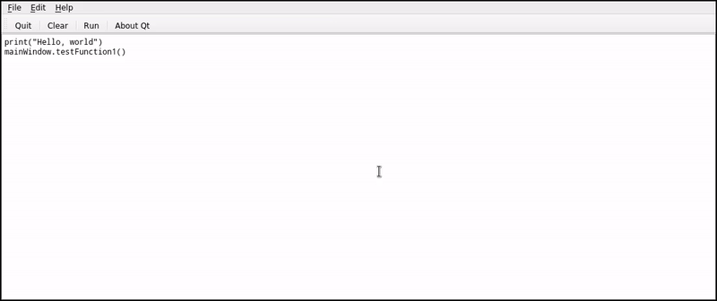

The role of C++ in the Python ecosystem: the case of the Qt framework.
Dr. Cristián Maureira-Fredes
@cmaureir


Extending
Python

Which language
should we use?
Surveys and Indexes
Stackoverflow

Stackoverflow

Tiobe
Breaking news
The world runs on C and C++
[citation needed]
NumPy

SciPy
Tensorflow
PyTorch
Ray

C++ has the fame to be a difficult language
but like Python it can be a simple and a complicated language
Python y C++
class Rectangle:
def __init__(self, width: int, height: int):
self.width : int = width;
self.height : int = height;
def set_values(self, x: int, y: int):
self.width = x;
self.height = y;
def area(self) -> int:
return self.width * self.height
def main():
rect = Rectangle()
rect.set_values(3,4);
print(f"area: {rect.area()}")
#include <iostream>
using namespace std;
class Rectangle {
int width, height;
public:
void set_values (int,int);
int area() {return width*height;}
};
void Rectangle::set_values(int x, int y) {
width = x;
height = y;
}
int main () {
Rectangle rect;
rect.set_values(3,4);
cout << "area: " << rect.area();
return 0;
}
La cercanía de C++ con Python (1/4)
#include <string>
float add(int x, int y) {
return x + y;
}
int main()
{
auto a = 1 + 2; // a will is an int
auto b = add(1, 2); // b is a float
auto n = {5}; // n is a std::initializerlist<int>
auto s1 = "hello"; // s1 is a const char *
auto s2 = "hello"s; // s2 is a std::string
return 0;
}
auto desde C++14
La cercanía de C++ con Python (2/4)
#include <iostream>
#include <ranges>
int main()
{
auto const ints = {0, 1, 2, 3, 4, 5};
for (int i : ints);
std::cout << i << ' ';
return 0;
}
ranges desde C++20
La cercanía de C++ con Python (3/4)
#include <iostream>
#include <ranges>
int main()
{
constexpr static auto v = {'A', 'B', 'C', 'D'};
for (auto const [index, letter] : std::views::enumerate(v))
std::cout << '(' << index << ':' << letter << ") ";
std::cout << '\n';
return 0;
}
std::view::enumerate desde C++23
La cercanía de C++ con Python (4/4)
#include <print>
int main()
{
std::print("{0} {2}{1}!\n", "Hello", 23, "C++");
return 0;
}
std::print desde C++23
Do you still believe Python is simpler?
f = lambda x, m: x + m(x)
*s,='abcde'
SuperList = type(
"SuperList",
(list, ),
dict(
y=42,
hidden=lambda x: x.upper() if x*0=="" else x
)
)
l = SuperList()
l.append(100)
print(l.hidden("Hello"))
_="_=%r;print(_%%_)";print(_%_)
22>>i&1
n&~-n<1
K1FNr1hQ=K*KN;K
but that's Pyth not Python
pyth.readthedocs.ioWhat's the deal with Qt
Like, Python, Qt is around since early '90s
It shares a few of the initial ideals with Python
Simple, useful, batteries included.
All the areas/icons Qt is around.
Thanks the for info..but we are at EuroPython?
Short story about
PyQt and PySide
PyQt and PySide table
PySide's extra mile
New API
PySide broke Qt API compatibility in order to enable other projects to use functionality easilyNumpy Support
t Accept numpy arrays wherever we accept a Python SequenceTooling (start project)
Tooling (deploy project)
The __feature__ option
# Common Qt structure
# - Using setter/getter
# - No writable properties
table = QTableWidget()
table.setColumnCount(2)
button = QPushButton("Add")
button.setEnabled(False)
layout = QVBoxLayout()
layout.addWidget(table)
layout.addWidget(button)
from __feature__ import (
snake_case, true_property
)
table = QTableWidget()
table.column_count = 2
button = QPushButton("Add")
button.enabled = False
layout = QVBoxLayout()
layout.add_widget(table)
layout.add_widget(button)
- Compatible since 6.3.0
- compilador JIT
- ~5x más rápido
- Modo stackless (micro-threads)
- pypy.org
arm64
- Universal binaries wheel (macOS)
- Packages for aarch64 (Linux)
- Researh on Windows ARM64
Android support
Video or screenshot of an app on Desktop and Android. Mention python-for-android (from kivy)What about other UI frameworks?
Kivy
...
Flet
...
Toga
...
How are the binding generated

Generation process
pybind11 (C++)
#include <pybind11/pybind11.h>
int add(int i, int j) {
return i + j;
}
PYBIND11_MODULE(example, m) {
// optional module docstring
m.doc() = "pybind11 example plugin";
m.def("add", &add,
"A function that adds two numbers");
}
$ c++ -O3 -Wall -shared -std=c++11 \
-fPIC $(python3 -m pybind11 --includes) example.cpp \
-o example$(python3-config --extension-suffix)
shiboken (C++)
// test.cpp
#include <test.hpp>
int add(int i, int j) {
return i + j;
}
// test.hpp
int add(int i, int j);
<!-- bindings.xml -->
<?xml version="1.0"?>
<typesystem package="simple">
<function signature="add(int, int)"/>
</typesystem>
$ cmake -S . -B build
$ cmake --build build
$ cmake --install build
Summary
| Type | C++ | Python | License | Support | |
|---|---|---|---|---|---|
| boost::python | Interface | C++11+ | 2.7, 3.0 | BSL-1 | Boost |
| SWIG | Code gen | C++11+ | 1.5+ | GPL3 | - |
| shiboken | Code gen | C++11 (*) | 2.7, 3.5+ | LGPLv3 | Qt |
| sip | Code gen | C++11 (*) | 3.5+ | GPLv3 | Riverbank |
| pyBind11 | Interface | C++11 (*) | 2.7, 3.x | BSD-3 | - |
| nanobind | Interface | C++14+ | 3 | - | - |
Technical details
Limited API
- Avoid dependency with one Python version (cp36-abi3)
- No special C-API depending on the version (*)
- Reduce release overhead
Build system
Packaging
Example: C++ to Python
// test.cpp
#include <test.hpp>
int add(int i, int j) {
return i + j;
}
// test.hpp
int add(int i, int j);
<!-- bindings.xml -->
<?xml version="1.0"?>
<typesystem package="simple">
<function signature="add(int, int)"/>
</typesystem>
$ cmake -S . -B build
$ cmake --build build
$ cmake --install build
Example: Python app (widgets)
Example: Python app (QML)
Example: Hybrid Applications (Python and C++)
Embedding Python into a Qt/C++ application
The Text editor interprets Python code to access the Qt/C++ application to modify it.
★ Check the scriptableapplication example
- Telegram t.me/qtforpython
- Wiki page pyside.org
- Official docs doc.qt.io/qtforpython
Q&A
The role of C++ in the Python ecosystem: the case of the Qt framework.
Dr. Cristián Maureira-Fredes
@cmaureir